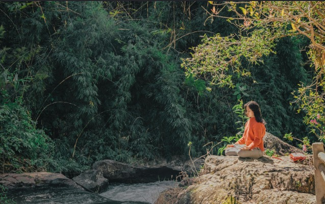

Un refugio donde la precisión del código, la disciplina estoica y la calma de la tierra se funden para construir un camino con alma y propósito.
Explorar la FilosofíaPrincipios firmes para navegar el caos del mundo moderno con serenidad.
Distinguir con claridad lo que depende de nosotros y lo que no. Concentrar toda la energía mental en las propias acciones, juicios y voluntad.
Amar cada circunstancia tal como se presenta. No solo soportar el destino, sino abrazarlo como materia prima para fortalecer el carácter.
La mente es como un cielo despejado: las opiniones de los demás y el ruido exterior son solo nubes pasajeras que no pueden alterar su esencia.
En una época donde la exposición lo es todo, elegir el anonimato y la protección de la propia energía es un acto de absoluta soberanía. El verdadero valor de una obra no reside en el aplauso masivo, sino en la congruencia de quien la edifica.
Este espacio honra la tecnología bien hecha, el arte manual de crear con paciencia y la libertad de rodar sin mirar ataduras.
"Que el refugio interior sea tan fuerte que ningún viento exterior pueda sacudir tu paz ni alterar tuy norte."
Espacios de libertad, creación y conexión profunda con el entorno.
Sentir la libertad absoluta de la carretera, conquistar la montaña y dejar que el viento limpie la mente entre curvas infinitas.
Mirar al cielo para recordar la inmensidad del universo. Crear velas con las manos como un ritual sagrado de luz, calor y calma.

El equilibrio del cuerpo y la respiración. Inhalar la paz del mar, la firmeza de la montaña y fluir con plena consciencia.